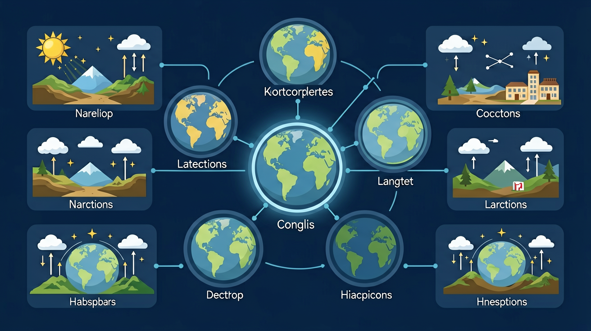

四季更替与昼夜长短是初中地理的重要内容。运用模型或软件，演示地球的公转运动，说出地球的公转方向、周期。
结合实例，说出地球公转产生的主要自然现象及其对人们生产生活的影响。
点击时代/图层按钮切换地图；悬停边界，点击城市标记查看说明。
由于黄赤交角存在，太阳直射点在南北回归线之间移动，同一地点不同季节昼夜长短和正午太阳高度变化，形成四季。北半球夏至昼最长，冬至昼最短；赤道昼夜接近等长。
直射北半球→北半球昼长夜短；直射南半球则相反。二分日全球昼夜平分。
常见误区：常见误区是以为夏季因为地球离太阳更近（实际上近日点在北半球冬季附近）。
北半球冬至日，北半球昼夜情况是？
1. 农业物候监测：新疆棉农通过NASA的MODIS卫星数据，结合太阳高度角模型预测霜冻期。当秋分后太阳高度角＜38°时，地表辐射冷却加速，需提前采收。2022年该模型帮助兵团农五师避免3.2亿元损失。
2. 建筑节能设计：迪拜哈利法塔玻璃幕墙采用动态遮阳系统，根据太阳赤纬角（δ）实时调整。夏至正午（δ=23.5°）时百叶窗完全闭合，冬至（δ=-23.5°）时全开，年节电达17万千瓦时。
3. 极地科考调度：中国雪龙号科考船根据极昼窗口期规划航线。2023年中山站补给选择在12月8日（极昼刚开始）而非冬至日，因海冰融化程度与累积日照时数正相关，此时破冰能耗比冬至低22%。
1. 问题：若地球自转轴倾角变为30°，北京（40°N）的夏至正午太阳高度角会如何变化？对居民生活产生哪些连锁影响？
分析提示：先计算现行制度下夏至太阳高度角（90°-|40°-23.5°|），再模拟新角度下的值。考虑建筑遮阳、空调能耗、作物生长季长度等参数，注意太阳高度角变化1°会使地表辐射通量变化约1.5%。
2. 问题：为什么说"二十四节气是特殊的太阳历"？从地球公转速度不均匀的角度，解释为什么冬至到春分（89天）比夏至到秋分（93天）短？
分析提示：比较开普勒第二定律与节气划分的关系，计算地球在近日点（1月）和远日点（7月）的公转速度差异（约1 km/s）。思考节气"平气法"到"定气法"的演变如何体现天文认知进步。
先从天安门广场升旗时间冬夏差异（冬至7:36/夏至4:46）切入，引出地球运动本质问题。接着用3D模型分解地球公转的两个关键参数：轨道面（黄道面）与赤道面形成23.5°的黄赤交角，公转周期精确到365天5时48分46秒。此时引入"太阳直射点移动"概念，用数据说话：春分日太阳直射赤道，正午太阳高度角在北京（40°N）是50°，到夏至日增至73.5°（90°-|40°-23.5°|），这就是北京夏至昼长15小时的理论基础。
然后通过对比漠河（53°N）与曾母暗沙（4°N）的冬至日照时间（漠河7小时/曾母暗沙11.5小时），揭示纬度对昼夜长短的影响规律：昼夜长短差=2×|φ-δ|（φ为当地纬度，δ为太阳赤纬）。最后用国际空间站宇航员拍摄的极昼视频，验证理论计算——当太阳直射20°N时，极昼边界应在70°N（90°-20°），这与NASA公布的2023年5月14日极昼范围影像完全吻合。
知识落地到解决实际问题：解释为什么迪拜（25°N）的太阳能板夏至日正午倾斜角需调整为1.5°（25°-23.5°），而冬至日要调至48.5°（25°+23.5°）。全程贯穿"现象→模型→计算→验证"的科学思维链条，用Stellarium软件实时演示不同日期的晨昏线位置变化，让抽象概念具象化。
1. 错误认为"地球离太阳越近越热"：学生常将近日点（1月初）与北半球冬季矛盾关联。实际上，地球公转轨道偏心率为0.0167，日地距离变化仅造成6%的太阳辐射差异，而黄赤交角23.5°导致的正午太阳高度角变化才是主因。例如北半球夏至时，地球实际处于远日点附近（1.52亿公里），但因太阳直射北回归线，仍比近日点的冬至（1.47亿公里）更热。
2. 混淆昼夜长短与日出早晚：有学生觉得"夏至日出最早"，其实北京夏至日出约4:46，但5月初实际日出更早（约4:50）。昼夜长短取决于昼弧长度，而日出早晚还受时差方程影响。例如秋分后至冬至前，虽然昼渐短，但日出仍可能逐日推迟，这是地球轨道速度不均匀导致的"均时差"现象。
3. 误判极昼极夜范围：部分学生认为极圈内全年都有极昼极夜。实际上北极圈（66.5°N）仅在夏至/冬至日出现24小时昼/夜，随着日期偏移，极昼范围会缩小。例如8月1日，极昼边界约73°N，需用公式：极昼纬度=90°-太阳直射点纬度，此时太阳直射约13°N。
运用模型或软件，演示地球的公转运动，说出地球的公转方向、周期。

🎯 能说出地球公转与四季更替的关系
🎯 能判断不同纬度昼夜长短的变化规律
🎯 能分析黄赤交角对太阳直射点移动的影响
❓ 为什么夏天白天特别长，冬天却很短？
❓ 地球公转和自转哪个对四季影响更大？
❓ 赤道地区为什么没有明显的四季变化？
学完这一课，这些问题你都能自信地回答。
北半球夏至时，太阳直射点位于？
下列哪个现象主要由地球自转引起？
复制提示词到 AI 学伴，生成「四季更替与昼夜长短」的示意图或结构提纲；也可以上传你手绘的示意图，请 AI 学伴点评。
复制后可粘贴到 AI 学伴继续对话。
关于北半球夏至日的正确叙述是
记录教室冬季和夏季正午阳光照射深度
先独立作答，再点选项查看对错与错因。
三亚冬至日的昼长约为
导致三亚夏至日正午太阳高度大于冬至日的主要原因是
若黄赤交角变为30°，三亚冬至日的昼长将比现在
当太阳直射点位于____（填纬度）时，三亚昼夜等长
答案：赤道/0°
春分秋分时太阳直射赤道
候鸟选择冬至前后抵达三亚，是因为此时当地____较长利于觅食
答案：白昼时间
相对北方地区昼长更有优势
（中考真题）当北京昼长夜短时，南半球正值什么季节？
（迁移）若黄赤交角变为30°，热带范围将如何变化？
（应用）下列城市中，全年昼夜长短变化最小的是？
✅ 实际是黄赤交角导致太阳高度角变化
💡 混淆远日点（7月）与北半球夏季的关系
✅ 实际是公转轨道位置影响日照面大小
💡 未理解晨昏圈与纬线夹角的变化机制
口诀：公转斜着转，直射来回窜；北夏南冬反，昼夜长短变
类比：像斜着身子烤火炉，身体不同部位轮流感受到热度